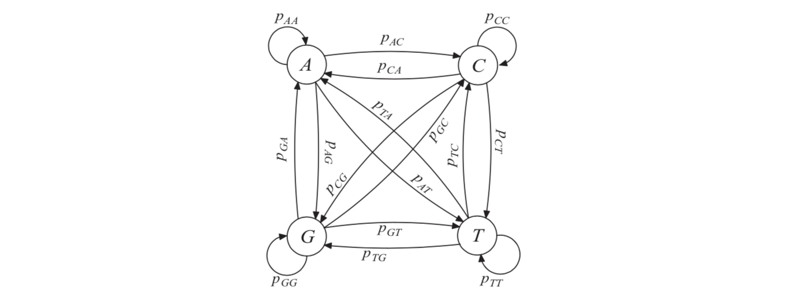
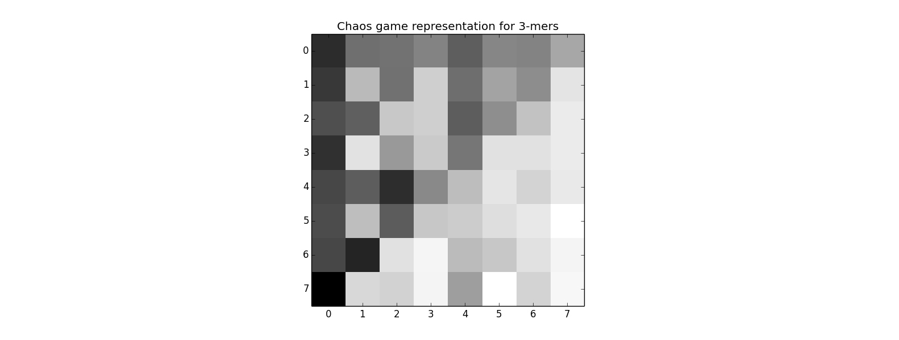

- 基因组和基因序列
- 序列的概率模型
- 序列的统计特征
- 标准数据形式及数据库
基因组剖析
基因组
- 基因组就是细胞中含有的所有 DNA 的集合
- 基因组由一条或多条 DNA 长条扭转成的染色体 chromosome组成
- 每种蛋白质的“制作指南”就保存在染色体中
DNA
- DNA 分子由核苷酸 nucleotide 的链式结构组成
- 生化概念中，细胞的酶机制从 DNA 的 5’ 段开始读到 3’ 段结束，作为序列的左右端
- DNA 序列可以是单股也可以是双股
- 双股 DNA 中核苷酸的碱基互补，A-T，G-C
- 染色体都是双股螺旋 DNA，单股中包含全部的基因信息
- DNA 序列的长度用核苷酸基对的数目 base pairs(bp) 来表示
基因组例子
- 原核生物 Prokaryotic 没有细胞核，使用特殊的结构存放基因组。它们的基因组有 239 种左右。一般都是单股环形，0.5 Mb - 13 Mb 长
- 细菌的基因组有数千种种左右。5 Kb - 50 Kb 长
- 真核生物 Eukaryotic 的核内基因组比原核生物长得多，从真菌的 8 Mb 到阿米巴虫的 670 Gb。人类的基因组为 3.5 Gb。
- 胞器 Organellar 除了巨型的核内基因组，真核生物在胞器内也携带小型的基因组。最常见的胞器是线粒体 mitochondrion 和叶绿体 chloroplast。这些基因组一般来自于在真核细胞内的原核有机体的残余。这些基因组一般为几万个 bp 长的环形结构
标准核苷酸字母
- A: 腺嘌呤 Adenine
- C: 胞嘧啶 Cytosine
- G: 鸟嘌呤 Guanine
- T: 胸腺嘧啶 Thymine
- N: 任意碱基 Any base
- R: A, G 嘌呤 Purine
- Y: C, T 嘧啶 Pyrimidine
- M: A, C 氨基 Amino
基因组序列的概率模型
DNA 序列和基因组
- 一个 DNA 序列 $s$ 定义为核苷酸 $N={A,C,G,T}$ 组成的有限长序列
- 一个基因组是和一个有机体或者胞器相关的所有 DNA 序列
序列的元素
- 一个序列的所有元素记作 $s=s_1s_2\ldots s_n$，每一个 $s_i$ 代表一个核苷酸
- 给定一组下标集 $K$ 获得的序列，就是把 $s$ 中对应下标的元素串联起来。比如 $K={i,j,k}$ 时，$s(K)=s_is_js_k$
- 如果 $K$ 是整数闭区间 $K=\left[i,j\right]$，也可以记作 $K=(i:j)$。对应子序列就是子串 $s(i:j)$
- 如果 $K$ 是单个元素 $K={i}$，则对应的就是单个特定元素 $s(i)=s_i$
- 例子：比如在 DNA 序列 $s=ATATGTCGTGCA$ 中，$s(3:6)=ATGT$，$s(8)=s_8=G$
多项分布序列模型
- 4 种核苷酸都由随机过程独立同分布地产生，概率分布为 $p=(p_A,p_C,p_G,p_T)$
- 序列 $s$ 中位置 $i$ 的元素所带核苷酸的碱基 $x\in N$ 的概率为 $p_x=p(s(i)=x)$，与其下标 $i$ 没有关系
- 作为概率分布，必须保证 $p_A+p_C+p_G+p_T=1$
- 多项分布计算出给定序列的概率 $P$ 又叫作给定模型下，出现观测到数据的似然 $L$。比如给定序列 $s=s_1s_2\ldots s_n$，其出现概率
$$
P(s)=\prod^N_{i=1}p(s(i))
$$
马尔可夫序列模型
- 核苷酸的种类取决于序列中前面的核苷酸符号
- $n$ 阶马尔可夫中每一个元素取决于前 $n$ 个核苷酸符号，多项分布模型可以看作 $0$ 阶马尔可夫
- 马尔可夫链是由一系列状态和转移概率组成的过程，转移概率用转移矩阵 $T$ 表示，初始状态由 $\pi$ 表示

$$
T=
\left[
\begin{array}{cccc}
p_{AA}&p_{AC}&p_{AG}&p_{AT}\\
p_{CA}&p_{CC}&p_{CG}&p_{CT}\\
p_{GA}&p_{GC}&p_{GG}&p_{GT}\\
p_{TA}&p_{TC}&p_{TG}&p_{TT}\\
\end{array}
\right]
$$
$$
\pi=
\left[
\begin{array}{cccc}
\pi_A&\pi_C&\pi_G&\pi_T
\end{array}
\right]
$$ - 转移矩阵中的每一项定义为
$$
p_{xy}=p(s_{i+1}=y|s_i=x)
$$ - 整个序列的概率就是一个联合概率，为了简化计算，使用 1 阶马尔可夫
\begin{align}
P(s)&=P(s_1s_2\ldots s_n)\\
&=P(s_n|s_{n-1})P(s_{n-1}|s_{n-2})\ldots P(s_2|s_1)\pi(s_1)\\
&=\prod_{i=2}^np(s_i|s_{i-1})\pi(s_1)
\end{align}
标记基因组：统计序列分析
碱基组成
- 可以统计每种碱基的数量，除以总长获得出现频率
- 除了总体分析，还可以使用滑动窗口进行局部分析，计算窗口内四种碱基的出现频率后标记在窗口中央
- 可以发现在整段基因中，碱基组成变化很大，这就与多项分布假设产生了矛盾
GC 比例
- 在细菌里，GC 频率很大程度上取决于有机体的复制机制，不同物种之间差距很大
- 可以通过定位 GC 比例偏离整体均值的地方，来发现植入本物种基因的外来遗传物质。比如病毒产生的基因水平转移 horizontal gene transfer
- AT 碱基丰富的地方在较低温度下就会失活，因此在比如海底热泉等极端温度下生存的嗜热有机体通常会有更高的 GC 比例
变点分析 change point analysis
- 变点就是序列中的统计性质，比如 GC 比例改变的地方
- 最简单的方法就是设置一个阈值来区分，若在两个窗口间经过了阈值，则发现变点
k 聚体频率和模体偏差
- k 聚体 k-mer 就是长度为 k 的碱基组
- 在一条基因组的核酸链上使用长度为 $k$ 的窗口逐个扫描进行统计，对于长度为 $L$ 的序列，一共有 $L-k+1$ 个 k-mer
- 为了方便观察，一般会使用“混沌游戏表示”或者“基因组签名”进行可视化，比如三聚体就可以这么表示

- 每一个格子就是一个模体 motif。单聚体有 4 个模体，二聚体有 16 个，k 聚体有 $4^k$ 个
寻找异常的 DNA 聚体
- 比较观察到的给定 k 聚体频率 $N$ 与背景模型（一般为多项分布模型）预期的频率
- 比如二聚体 $xy$ 的偏差率
$$
odds\ ratio \approx \frac{N(xy)}{N(x)N(y)}
$$ - 如果序列是多项分布模型生成的，那么这个偏差率就是 1；因此如果和 1 相差甚远，要么是发生了突变，要么是自然选择的结果
- 和 1 的差值需要跟某个阈值比较，阈值取决于观察到的各类模体的数量以及序列的长度
异常模体的生物学因素
- 异常的核苷酸模体通常反应了生物学因素，突变或者是自然选择
- 高频模体一般是由于重复性结构；低频模体一般是由于结构性质不好或者与细菌内部免疫系统不兼容
- 限制位点 restriction site 是 DNA 上有特定的核苷酸聚体标记的位置。细菌细胞为了抵抗病毒而产生的限制酶会识别到限制位点并进行 DNA 切割。一般是回文结构 palindrome
- 病毒的基因组中，为了避免宿主产生限制酶，通常会减少这类核苷酸聚体的数量
获取数据
在线数据库
- GenBank: www.ncbi.nlm.nih.gov
- European Molecular Biology Laboratories (EMBL): www.ebi.ac.uk
- DNA Database of Japan (DDBJ): www.ddbj.nig.ac.jp
数据格式和标签
FASTA 是一种数据库无关的标准数据格式，以 $>$ 号开头，之后直到一个空行之前都是数据标签
1
2
3
4
5
6>Homo sapiens neanderthalensis mitochondrial D-loop, HVR I
CCAAGTATTGACTCACCCATCAACAACCGCCATGTATTTCGTACATTACTGCCAGCCACCATGAATATTGTACAG
TACCATAATTACTTGACTACCTGTAATACATAAAAACCTAATCCACATCAACCCCCCCCCCCCATGCTTACAAGC
AAGCACAGCAATCAACCTTCAACTGTCATACATCAACTACAACTCCAAAGACACCCTTACACCCACTAGGATATC
AACAAACCTACCCACCCTTGACAGTACATAGCACATAAAGTCATTTACCGTACATAGCACATTATAGTCAAATCC
CTTCTCGCCCCCATGGATGACCCCCCTCAGATAGGGGTCCCTTGAGenBank 的词条一行对应一种信息，以 $//$ 作为词条尾
1
2
3
4
5
6
7
8
9
10
11
12
13
14LOCUS AF254446 345 bp DNA linear PRI 11-MAY-2000
DEFINITION Homo sapiens neanderthalensis mitochondrial D-loop,
hypervariable region I.
ACCESSION AF254446
SOURCE mitochondrion Homo sapiens neanderthalensis
...
ORIGIN
1 ccaagtattg actcacccat caacaaccgc catgtatttc gtacattact gccagccacc
61 atgaatattg tacagtacca taattacttg actacctgta atacataaaa acctaatcca
121 catcaacccc ccccccccat gcttacaagc aagcacagca atcaaccttc aactgtcata
181 catcaactac aactccaaag acacccttac acccactagg atatcaacaa acctacccac
241 ccttgacagt acatagcaca taaagtcatt taccgtacat agcacattat agtcaaatcc
301 cttctcgccc ccatggatga cccccctcag ataggggtcc cttga
//
- 1.Cristianini, N., & Hahn, M. W. (2006). Introduction to computational genomics : A case studies approach. Retrieved from https://ebookcentral.proquest.com/lib/bristol/detail.action?docID=281734 ↩